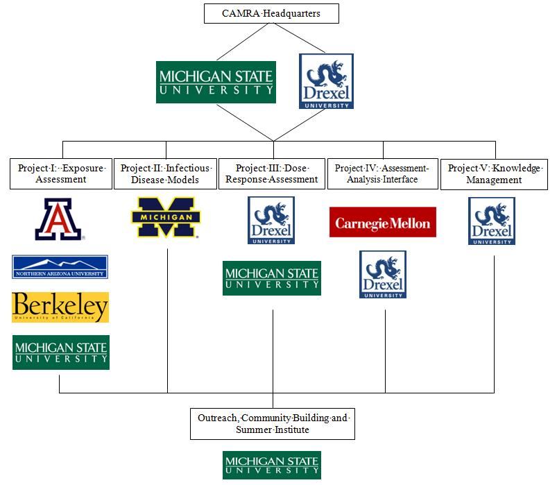

Quick Links
- QMRA Wiki
- Past Workshops
- In the News
- Contact
- CAMRA Overview
- Personnel
- Opportunities
- Accomplishments
- What is QMRA?
Supporting Institutions


About CAMRA
The Center for Advancing Microbial Risk Assessment (CAMRA) is a multidisciplinary Center of Excellence (COE) jointly funded through the Department of Homeland Security (DHS) and Environmental Protection Agency (EPA). Headed jointly at Michigan State University (MSU) and Drexel University, CAMRA was formed to address knowledge gaps and concerns regarding microbial hazards associated with public health risks including the spread of infectious disease and bioterrorism which have been highlighted after the 2001 anthrax attacks in Washington DC and Florida as well as recent attention on the spread of H1N1 flu. CAMRA promotes the use of Quantitative Microbial Risk Assessment (QMRA) to integrate medicine, biology, environmental processes, engineering ans mathematics as well as decision science to address the vast array of microbial risks and infectious diseases now facing our communities and the world in the 21st century.
CAMRA is tasked with developing the knowledge base through original research required in developing the most advanced and credible risk assessments for Biological Agents of Concern (BAC). In order to accomplish this CAMRA has focused its research efforts on the following main topics:
- Exposure Assessment
- Detection
- Fate and Transport
- Infectious Disease Transmission Models
- Development of Surrogates for BACs
- Protocols for Use of Surrogates as well
- Dose Response Modeling
- Classical Models
- Advanced Dose Response Models
- Mechanistic and Physiologically Based Models
- Risk Characterization and Communication
- Understanding Best Use of Risk Assessment in Decision Making
- Expansion of the Assessment-Analysis Interface
- Modeling How Communities Communicate
- Knowledge Management
- Understanding Better how Multidisciplinary Teams Develop New Advancements
- Communication of New Developments Through CAMRA and the Public
CAMRA is represented by scientists from Carnegie Mellon University, Drexel University, Michigan State University, Northern Arizona University, University of Arizona, University of California Berkeley, and University of Michigan. Based on the following structure, CAMRA is broken into five distinct projects which all communicate with each other in order to develop the most advanced tools for the risk assessment community.
Mission
CAMRA investigators have developed twin missions:
- Technical mission
Develop critically reviewed sets of models, tools and information, which are usable in a credible risk assessment framework. These frameworks will eliminate or reduce health impacts from infectious agents and deliberate BAC use for the indoor and outdoor environments.
- Network and Community Development
Construct a national network for microbial risk assessment (MRA). Develop and institute knowledge management systems for learning and transfer of knowledge and information to the current community of scientists, students and professionals in MRA.
There are five major research projects which define the objectives and activities of CAMRA. Each project objective has been developed through collaborative efforts of scientists and is integrated via a management structure that facilitates interaction. These research projects addressed exposure, methods and models; dose-response; population outcomes; risk frameworks; and knowledge management, transfer and learning. Through these projects we have
- Documented the sensitivity and specificity of risk exposure methods and their ability to address levels of safety;
- Created a research toolbox with surrogates for BAC;
- Evaluated the fate and transport of BAC in water distribution systems, air, and buildings;
- Developed a suite of models for characterizing exposure via aerosols and the indoor environment that are tested with real-world data where available, describing disease transmission through dynamic stochastic and deterministic models, and assessing controls such as vaccines, decontamination, and quarantines; and
- Produced an inventory of critically analyzed dose-response relationships for Category A agents and developed mechanistic dose-response models.
Overall these projects have focused on assessment, lessons learned, new science and research, databases, tools and methods and finally knowledge building for learning and communication purposes. CAMRA continues to produce suites of tools and models for government officials and first responders to use as well as contribute to the research, education, and professional QMRA communities.
CAMRA Structure

Investigators
Co-directors:
- Joan B. Rose, MSU rosejo@msu.edu
- Charles N. Haas, Drexel haascn@drexel.edu
Project Leaders:
- Charles P. Gerba, University of Arizona gerba@ag.arizona.edu
- Joseph N.S. Eisenberg, University of Michigan jnse@umich.edu
- Charles N. Haas, Drexel University haascn@drexel.edu
- Patrick Gurian, Drexel University pgurian@drexel.edu
- Rosina Weber, Drexel University rweber@cis.drexel.edu
Investigators
Project I
Charles P Gerba, University of Arizona
gerba@ag.arizona.edu
Christopher Choi, University of Arizona
cchoi@cals.arizona.edu
Ian
Pepper, University of Arizona
ipepper@ag.arizona.edu
Syed
Hashsham, Michigan State
University
hashsham@msu.edu
Paul
Kleim, Northern Arizona
University
Paul.Keim@nau.edu
Mark
Nicas, University of California,
Berkeley
mnicas@berkeley.edu
William Nazaroff, University of California,
Berkeley
nazaroff@ce.berkeley.edu
Project II
Joseph N.S. Eisenberg, University of
Michigan
jnse@umich.edu
James Koopman, University of Michigan
jkoopman@umich.edu
Project III
Charles N. Haas, Drexel
University
haascn@drexel.edu
Carole Bolin, Michigan State
University
bolinc@dcpah.msu.edu
Project IV
Patrick L. Gurian, Drexel
University
pgurian@drexel.edu
Elizabeth Casman, Carnegie Mellon
University
casman@andrew.cmu.edu
Mitchell Small, Carnegie Mellon
University
ms35@andrew.cmu.edu
Project V
Rosina Weber, Drexel
University
rweber@cis.drexel.edu